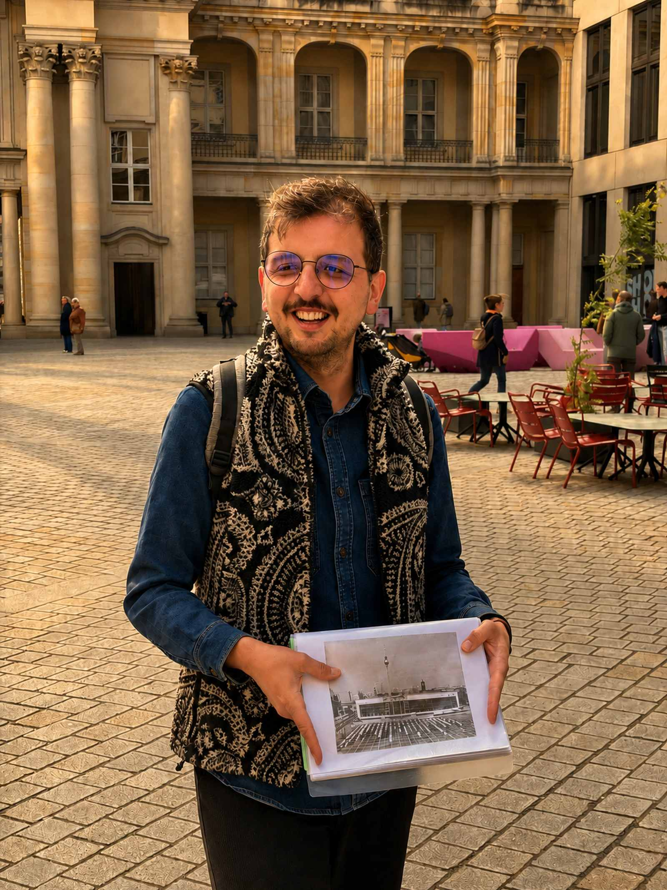

What do you want from your first walk?
Open the questions that pull you in. Three discoveries are enough for a practical first-walk recommendation.

Start with the question, not the format
Tap any numbered lens. The scene is outside the Humboldt Forum, where a live question can change what you notice next.
Scene: Schlüterhof at the Humboldt Forum. Photo from the BerlinWalk collection. Why this choice matters.